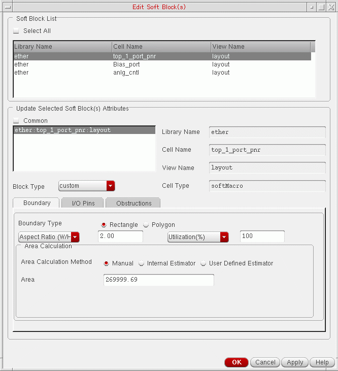
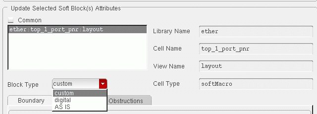

Changing the Block Type
To change the type of a soft block:
-
From the layout window menu bar, choose Edit – Soft Blocks.
The Edit Soft Blocks form is displayed.
 -
In the Soft Block List, select the blocks whose type you want to change.
The selected blocks are made available in the Update Selected Soft Block Attributes list. -
Select the blocks whose type you want to change.
If you want to change the type for all the listed blocks, check the Common box. -
Choose the Block Type you need from the cyclic field.
 - Click OK or Apply to accept the change.
Related Topics
Return to top